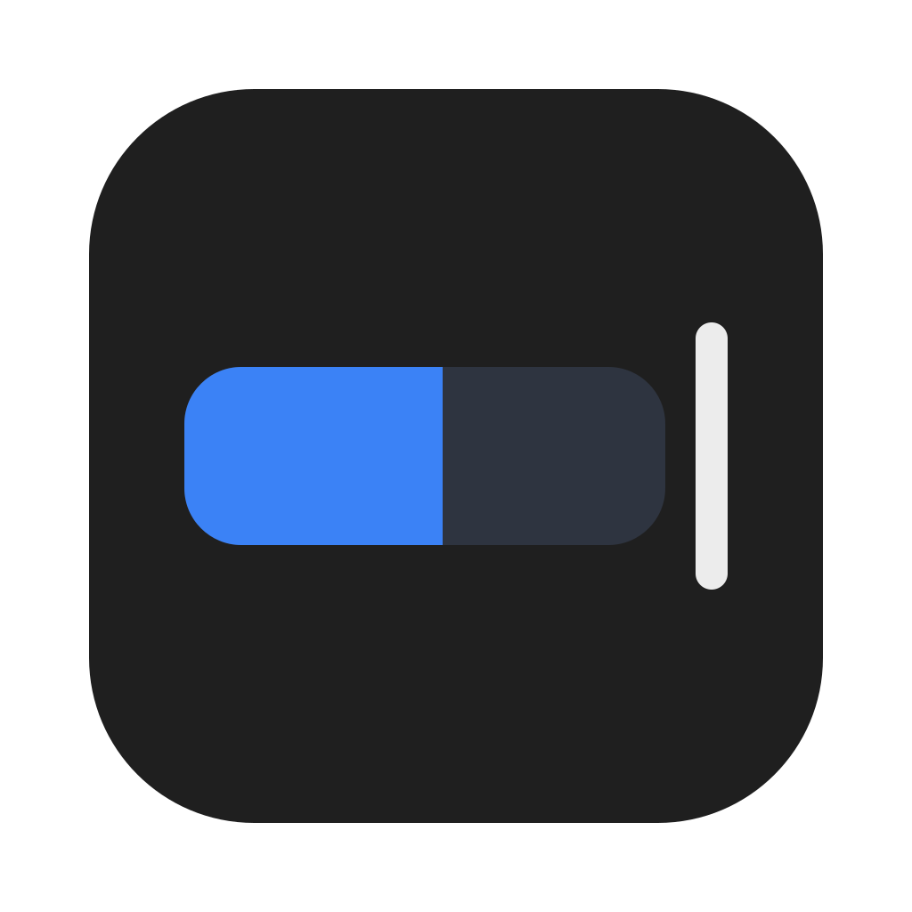

Headroom
See how much of your Claude plan you've used this week, and when it resets, right in your Mac's Notification Center.
Headroom is a free, open-source widget for people who use Claude Code on a Pro, Max or Ultra plan. It shows the same numbers as the usage page in Claude's settings, without opening anything.
macOS 14 Sonoma or later. Early preview.
Private by design
No sign-in
Headroom never asks for your Claude account and never reads tokens, passwords or browser cookies.
No internet
There is no network code in the app or the widget. Your numbers never leave your Mac.
Keeps almost nothing
Only the percent used, the reset times and when they were updated. No prompts, folders, costs or account details.
How it works
Every time Claude Code gets a reply, it hands your plan's usage numbers to its status line, a small command you can set up to show information under the prompt. Headroom adds a tiny helper there that saves just those numbers and then runs your existing status line exactly as before.
- Install Headroom and open it.
- Click Connect to Claude Code. Headroom backs up your Claude Code settings first, and Disconnect puts them back.
- Add the Headroom widget to Notification Center (click the date and time in the menu bar, then Edit Widgets).
Good to know
- Numbers update when Claude Code replies. Chats on claude.ai or in the Claude app use the same limits, but they show up in Headroom at your next Claude Code reply. The "As of" time tells you how fresh the numbers are, and turns amber after 30 minutes.
- Reset times are always right, because Claude Code sends the exact moment each limit resets.
- Optional alerts when you pass 90% of your weekly limit (or a level you choose), once per week.
- Optional menu bar item with your weekly percent.